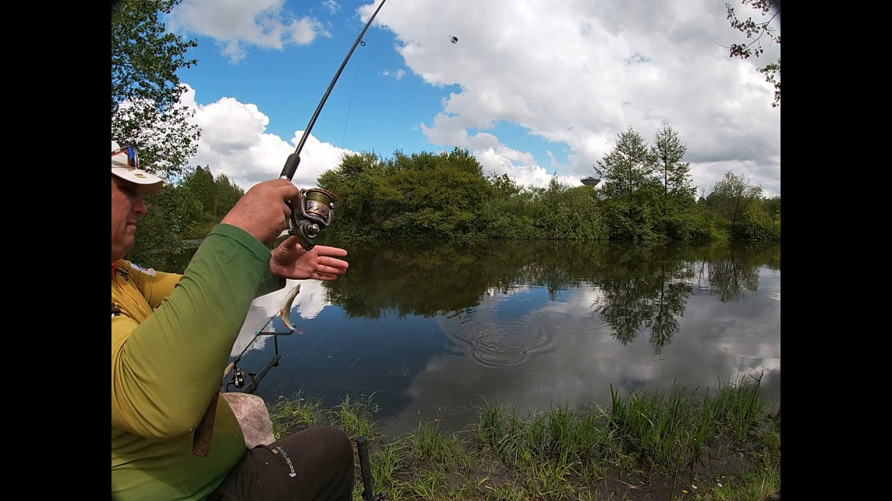

Pramoginė Žvejyba | Ideali Dovana Žvejui - DovanuSala.lt
 0 Informacija Įsimintos 0 Krepšelis 0 VISOS DOVANOS Poilsis su nakvyne Spa su nakvyne Sveikatinimas ir gydymas Nakvynė su vakariene daugiau Spa ir grožis Masažai Veido ir galvos procedūros Spa procedūros ir ritualai daugiau Gurmaniškos Vakarienės Degustacijos Kulinarijos kursai daugiau Skrydžiai Šuoliai parašiutu Skrydžiai lėktuvu Skrydis oro balionu daugiau Vandens pramogos Vandens parkai, baseinai ir pirtys Nardymas Jachtos ir laivai daugiau Aktyvios ir ekstremalios Jodinėjimas žirgais Šokiai, joga, treniruotės Nuotykių ir batutų parkai daugiau Auto-moto Ekstremalūs pasivažinėjimai Keturračiai ir bagiai Kartingai daugiau Šaudymas Šaudymas koviniais ginklais Šaudymas iš lanko Dažasvydis, lazeriai, šratasvydis daugiau Fotosesijos Asmeninės fotosesijos Romantiškos fotosesijos Šeimos fotosesijos daugiau Kultūrinės Galvosūkių kambariai Ekskursijos Teatro ir kino pramogos daugiau Pamokos ir kursai Menų pamokos Muzika Seminarai ir kursai daugiau Romantiškos Dovanos Jiems Romantiškos fotosesijos Spa procedūros Dviem daugiau KAM? Dovanos moterims Spa ir grožis Poilsis su nakvyne Fotosesijos Gurmaniškos pramogos Pamokos ir kursai Kultūrinės pramogos Jodinėjimas žirgais Vandens pramogos Skrydžiai Dovanos vyrams Aktyvios ir ekstremalios Šaudymo pramogos Skrydžiai Auto-moto pramogos Vandens pramogos Poilsis su nakvyne Spa procedūros Jam Dovanos dviem Poilsis su nakvyne Spa procedūros Dviem Gurmaniškos pramogos Skrydžiai Vandens pramogos Romantiškos fotosesijos Jodinėjimas žirgais Pamokos ir kursai Kultūrinės pramogos Dovanos vaikams Nuotykių ir batutų parkai Kartingai Jodinėjimas žirgais Vandens parkai, baseinai ir pirtys Vaikų fotosesijos Pamokos ir kursai Kultūrinės pramogos Įmonėms Dovanos šeimai Vandens pramogos Poilsis su nakvyne Šeimos fotosesijos Skrydžiai Nuotykių ir batutų parkai Kultūrinės pramogos Gurmaniškos pramogos Aktyvios ir ekstremalios Dovanos senjorams Spa ir grožis Gurmaniškos pramogos Poilsis su nakvyne Kultūrinės pramogos Pamokos ir kursai Fotosesijos Vandens pramogos Skrydžiai Dovanos Jai Dovanos merginai Dovanos draugei Dovanos žmonai Dovanos mamai Dovana sesei Dovana močiutei Dovana kolegei Dovanos nėštukėms Dovanos Jam Dovanos draugui Dovanos vaikinui Dovanos tėčiui Dovanos broliui Dovanos seneliui Dovana kolegai VIETA Regionai Lietuvoje Vilniuje Kaune Klaipėdoje Panevėžyje Šiauliuose Utenoje Marijampolėje Tauragėje Telšiuose Alytuje Kurortai Lietuvoje Druskininkuose Birštone Palangoje Anykščiuose Trakuose Regionai Latvijoje Rygos regionas Vidžemė Kuržemė Latgala Žiemgala Regionai Estijoje Harju apskritis Valgos apskritis Sarės apskritis Raplos apskritis Pernu apskritis Tartu apskritis PROGA Kalėdinės dovanos Gimtadienio dovanos Naujametinės dovanos Jubiliejaus dovanos Metinių proga dovanos Velykinės dovanos Tėvo dienos dovanos Moters dienos dovanos Valentino dienos dovanos Vyro dienos dovanos Mokytojų dienos dovanos Boso dienos dovanos Mokslų baigimo dovanos Dovanos laisvalaikiui Mamos dienos dovanos Vestuvinės dovanos Rugsėjo 1 d. dovanos Dovanos Joninių proga RINKINIAI ČEKIAI NUOLAIDOS TOP NAUJOS Turite dovanų kuponą? | Informacija Nemokamas pakeitimas Grąžinimo garantija Nemokamas pristatymas Pradžia Dovanų kuponai > Vandens pramogos > Žvejyba
0 Informacija Įsimintos 0 Krepšelis 0 VISOS DOVANOS Poilsis su nakvyne Spa su nakvyne Sveikatinimas ir gydymas Nakvynė su vakariene daugiau Spa ir grožis Masažai Veido ir galvos procedūros Spa procedūros ir ritualai daugiau Gurmaniškos Vakarienės Degustacijos Kulinarijos kursai daugiau Skrydžiai Šuoliai parašiutu Skrydžiai lėktuvu Skrydis oro balionu daugiau Vandens pramogos Vandens parkai, baseinai ir pirtys Nardymas Jachtos ir laivai daugiau Aktyvios ir ekstremalios Jodinėjimas žirgais Šokiai, joga, treniruotės Nuotykių ir batutų parkai daugiau Auto-moto Ekstremalūs pasivažinėjimai Keturračiai ir bagiai Kartingai daugiau Šaudymas Šaudymas koviniais ginklais Šaudymas iš lanko Dažasvydis, lazeriai, šratasvydis daugiau Fotosesijos Asmeninės fotosesijos Romantiškos fotosesijos Šeimos fotosesijos daugiau Kultūrinės Galvosūkių kambariai Ekskursijos Teatro ir kino pramogos daugiau Pamokos ir kursai Menų pamokos Muzika Seminarai ir kursai daugiau Romantiškos Dovanos Jiems Romantiškos fotosesijos Spa procedūros Dviem daugiau KAM? Dovanos moterims Spa ir grožis Poilsis su nakvyne Fotosesijos Gurmaniškos pramogos Pamokos ir kursai Kultūrinės pramogos Jodinėjimas žirgais Vandens pramogos Skrydžiai Dovanos vyrams Aktyvios ir ekstremalios Šaudymo pramogos Skrydžiai Auto-moto pramogos Vandens pramogos Poilsis su nakvyne Spa procedūros Jam Dovanos dviem Poilsis su nakvyne Spa procedūros Dviem Gurmaniškos pramogos Skrydžiai Vandens pramogos Romantiškos fotosesijos Jodinėjimas žirgais Pamokos ir kursai Kultūrinės pramogos Dovanos vaikams Nuotykių ir batutų parkai Kartingai Jodinėjimas žirgais Vandens parkai, baseinai ir pirtys Vaikų fotosesijos Pamokos ir kursai Kultūrinės pramogos Įmonėms Dovanos šeimai Vandens pramogos Poilsis su nakvyne Šeimos fotosesijos Skrydžiai Nuotykių ir batutų parkai Kultūrinės pramogos Gurmaniškos pramogos Aktyvios ir ekstremalios Dovanos senjorams Spa ir grožis Gurmaniškos pramogos Poilsis su nakvyne Kultūrinės pramogos Pamokos ir kursai Fotosesijos Vandens pramogos Skrydžiai Dovanos Jai Dovanos merginai Dovanos draugei Dovanos žmonai Dovanos mamai Dovana sesei Dovana močiutei Dovana kolegei Dovanos nėštukėms Dovanos Jam Dovanos draugui Dovanos vaikinui Dovanos tėčiui Dovanos broliui Dovanos seneliui Dovana kolegai VIETA Regionai Lietuvoje Vilniuje Kaune Klaipėdoje Panevėžyje Šiauliuose Utenoje Marijampolėje Tauragėje Telšiuose Alytuje Kurortai Lietuvoje Druskininkuose Birštone Palangoje Anykščiuose Trakuose Regionai Latvijoje Rygos regionas Vidžemė Kuržemė Latgala Žiemgala Regionai Estijoje Harju apskritis Valgos apskritis Sarės apskritis Raplos apskritis Pernu apskritis Tartu apskritis PROGA Kalėdinės dovanos Gimtadienio dovanos Naujametinės dovanos Jubiliejaus dovanos Metinių proga dovanos Velykinės dovanos Tėvo dienos dovanos Moters dienos dovanos Valentino dienos dovanos Vyro dienos dovanos Mokytojų dienos dovanos Boso dienos dovanos Mokslų baigimo dovanos Dovanos laisvalaikiui Mamos dienos dovanos Vestuvinės dovanos Rugsėjo 1 d. dovanos Dovanos Joninių proga RINKINIAI ČEKIAI NUOLAIDOS TOP NAUJOS Turite dovanų kuponą? | Informacija Nemokamas pakeitimas Grąžinimo garantija Nemokamas pristatymas Pradžia Dovanų kuponai > Vandens pramogos > Žvejyba
Žvejyba
FILTRAS
Kaina nuo 5€ iki 20€ ( 3 ) nuo 20€ iki 50€ ( 6 ) nuo 50€ iki 100€ ( 6 ) nuo 100€ iki 200€ ( 6 ) nuo 200€ iki 400€ ( 3 ) daugiau nei 400€ ( 2 ) Regionas Kauno regionas ( 6 ) Klaipėdos regionas ( 5 ) Vilniaus regionas ( 2 ) Marijampolės regionas ( 1 ) Miestas Klaipėda ( 5 ) Raseiniai ( 5 ) Vilnius ( 2 ) Kaunas ( 1 ) Marijampolė ( 1 ) Dalyvių skaičius 1 ( 11 ) 2 ( 13 ) 3 ( 7 ) 4 ( 5 ) 5 ( 4 ) 6 ( 3 ) 7 ( 3 ) 8 ( 3 ) 9 ( 3 ) Šalis Lietuva ( 14 ) Valyti pasirinktus filtrus Rodyti pasiūlymus 39,00 € Galioja 12 mėn.Žvejyba ir laimikio paruošimas sodyboje „Karpynė“
Nuo 39,00 € Top Karpynė Raseiniai 1-2 Pasirinkta trukmė Galioja 12 mėn. 89,50 € 108,00 € -17% Galioja 12 mėn.Nakvynė su žvejyba sodyboje „Karpynė”
89,50 € 108,00 € -17% Nuolaida Karpynė Raseiniai 2 1 nakvynė Galioja 12 mėn. 10,00 € Galioja 12 mėn.Žūklės salono „Vienam gale kablys“ dovanų čekis Marijampolėje
Nuo 10,00 € Vienam gale kablys Marijampolė 1-9 Neapibrėžta Galioja 12 mėn. 20,00 € Galioja 12 mėn.Žvejyba šiltuoju sezonu metu Arvyduose
Nuo 20,00 € Arvydai.lt Vilnius 1-2 Priklauso nuo pasirinkto... Galioja 12 mėn. 124,00 € 135,00 € -8% Galioja 12 mėn.Nakvynė su vakariene ir žvejyba sodyboje „Karpynė“
124,00 € 135,00 € -8% Nuolaida Karpynė Raseiniai 2 1 nakvynė Galioja 12 mėn. 115,00 € Galioja 12 mėn.Žvejyba iš laivo Kauno mariose 1-12 draugų kompanijai
115,00 € Party cruiser Kaunas 1-12 2 val. Galioja 12 mėn. 75,00 € Galioja 12 mėn.Žvejyba ir laimikio paruošimas sodyboje „Karpynė“ dviem
Nuo 75,00 € Karpynė Raseiniai 2-4 Pasirinkta trukmė Galioja 12 mėn. 15,00 € Galioja 12 mėn.Poledinė žvejyba Arvyduose
Nuo 15,00 € Arvydai.lt Vilnius 1-2 7 val. Galioja 12 mėn. 39,00 € Galioja 12 mėn.Žvejyba Kuršių mariose Klaipėdoje
Nuo 39,00 € Barracuda Tour Klaipėda 1-2 iki 5 val. Galioja 12 mėn. 149,00 € Galioja 12 mėn.Lašišos žvejyba su gidu Baltijos jūroje
149,00 € Barracuda Tour Klaipėda 1 iki 8 val. Galioja 12 mėn. 200,00 € Galioja 12 mėn.Žvejyba Kuršių mariose kompanijai Klaipėdoje
200,00 € Barracuda Tour Klaipėda 1-5 iki 5 val. Galioja 12 mėn. 400,00 € Galioja 12 mėn.Lašišos žvejyba su gidu kompanijai Baltijos jūroje
400,00 € Barracuda Tour Klaipėda 1-3 iki 8 val. Galioja 12 mėn. 89,00 € Galioja 12 mėn.Savarankiška žvejyba motorine valtimi
89,00 € Barracuda Tour Klaipėda 1-3 8 val. Galioja 12 mėn. 50,00 € Galioja 12 mėn.Kaimo turizmo sodybos „Karpynė“ dovanų čekis
Nuo 50,00 € Nauja Karpynė Raseiniai 1-9 Neapibrėžta Galioja 12 mėn. Ieškote dovanos žvejui ? Pramoginė žvejyba - tai puiki galimybė žvejybos mėgėjams atsipalaiduoti, pabėgti nuo rutinos bei aktyviai leisti laiką gamtoje. Plačiame mūsų pasiūlymų asortimente Jūsų lauks žvejyba jūroje , žvejyba sodyboje , poledinė žūklė ir daug kitų puikių pasiūlymų.
Išmokite gaudyti laimikį ar tiesiog gerai praleiskite laiką gamtoje prie vandens telkinio! Lašišų, menkių, lydekų ar karpių žvejyba, gali virsti gardžia puota, kadangi pagautą laimikį galėsite pasiimti kartu su savimi.
Visai nesvarbu, ar žvejojate visą savo gyvenimą ar leisitės į šį nuotykį pirmą kartą, žūklės metu jūroje, visas reikalingas žinias ir pagalbą suteiks gidas.
Šaunų laisvalaikį sau ar savo draugams suplanuokite patys:
Galėsite išsirinkti žvejybos pasiūlymą tiek vienam asmeniui, tiek visai grupelei žmonių. Pramogautojų skaičių galėsite nustatyti Jūs.
Galėsite nuspręsti, norėsite leistis į žvejybą su nakvyne ar užteks tik pusdienio. Žvejyba be nakvynės trunka iki 8 valandų.
Žvejyba gali tapti puikia pramoga tiek būnant vienumoje, tiek norint praleisti turiningai laisvalaikį su draugais. Jeigu ieškote originalių laisvalaikio praleidimo būdų, tai dovana žvejyba – vienas tinkamiausių pasirinkimų.
Svarbu žinoti :
Žvejybos data, trukmė, asmenų skaičius priklauso nuo Jūsų pasirinkto pasiūlymo;
Visa reikalinga įranga suteikiama.
Laimikio pasiėmimas gali būti ribojamas, priklausomai nuo žuvies veislės ar svorio.
Vis dar dvejojate, ar ši pramoga patiks dovanos gavėjui? Neabejokite, dovanų kuponas žvejyba patiks kiekvienam žvejui bei tiems, kurie mėgsta leisti laiką turiningai ir nuotaikingai. Papildykite savo ir kitų poilsį naujais įspūdžiais!
Informacija Pristatymas Garantijos Apie mus Kontaktai D.U.K. perkančiam dovaną Nuolaidos ir lojalumas Mūsų parduotuvės UAB Baltic commerce +370 633 42244 info@dovanusala.lt 9.4/10 Iš 10436 lankytojų įvertinimų Informuojame, kad šioje svetainėje naudojami slapukai. Sutikdami, paspauskite mygtuką SUTINKU. Daugiau informacijos – slapukų politikoje Sutinku © 2011-2020